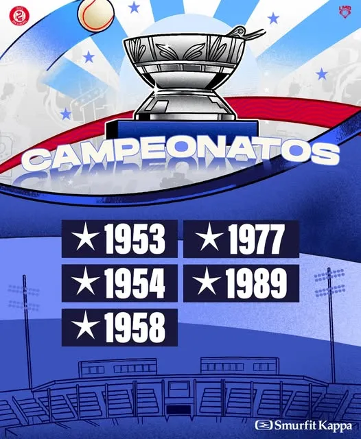

Cinco campeonatos
Los tres primeros (1953, 1954 y 1958) los ganaron por terminar en primer lugar, porque entonces no había playoffs. Los de 1977 y 1989 llegaron tras ganar tres series de postemporada.


Los tres primeros (1953, 1954 y 1958) los ganaron por terminar en primer lugar, porque entonces no había playoffs. Los de 1977 y 1989 llegaron tras ganar tres series de postemporada.
Dirigidos por el cubano Adolfo Luque, ganaron dos títulos seguidos. En 1953 Ramiro Cuevas lanzó el primer juego perfecto de la historia de la liga, y en 1954 terminaron con 56 victorias y 24 derrotas, ocho juegos y medio arriba de los Leones de Yucatán.
Con José "Cheo" Ramos como mánager ganaron 75 juegos y terminaron 10 arriba de los Diablos Rojos del México.
Con Jorge Fitch como mánager eliminaron a Unión Laguna y a Saltillo, y en la serie final vencieron 4-1 a los Diablos Rojos del México.
Ya como Tecolotes de los Dos Laredos, y con José "Zacatillo" Guerrero como mánager, terminaron en primer lugar, con 82 victorias y 50 derrotas. Ganaron dos series a siete juegos, contra Monterrey y Saltillo, y la final 4-2 ante los Leones de Yucatán. Es su título más reciente.
En 2023 tuvieron el mejor récord de la Zona Norte (50-36) y llegaron a la final del norte, que perdieron ante Unión Laguna. En 2024 volvieron a esa final y cayeron ante los Sultanes.